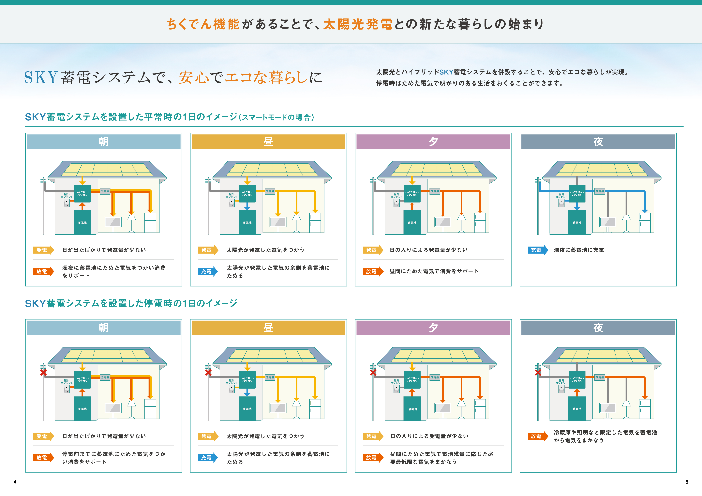
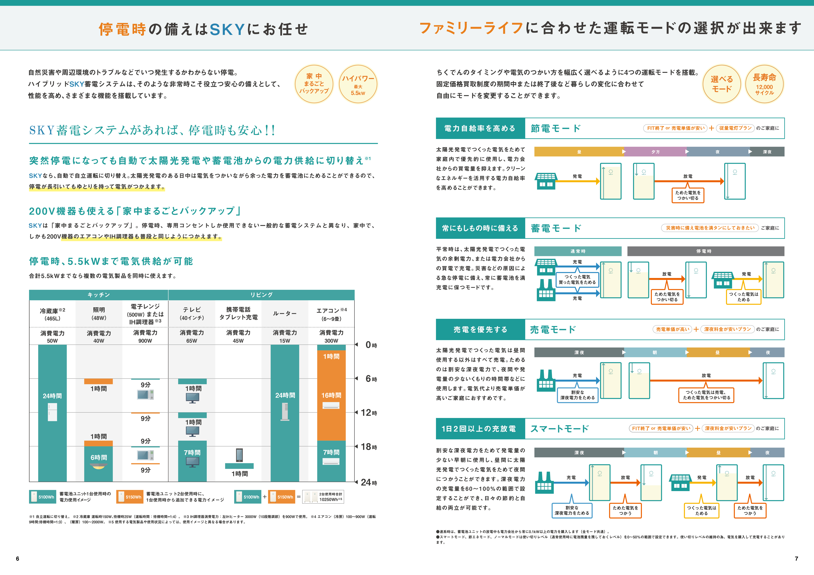
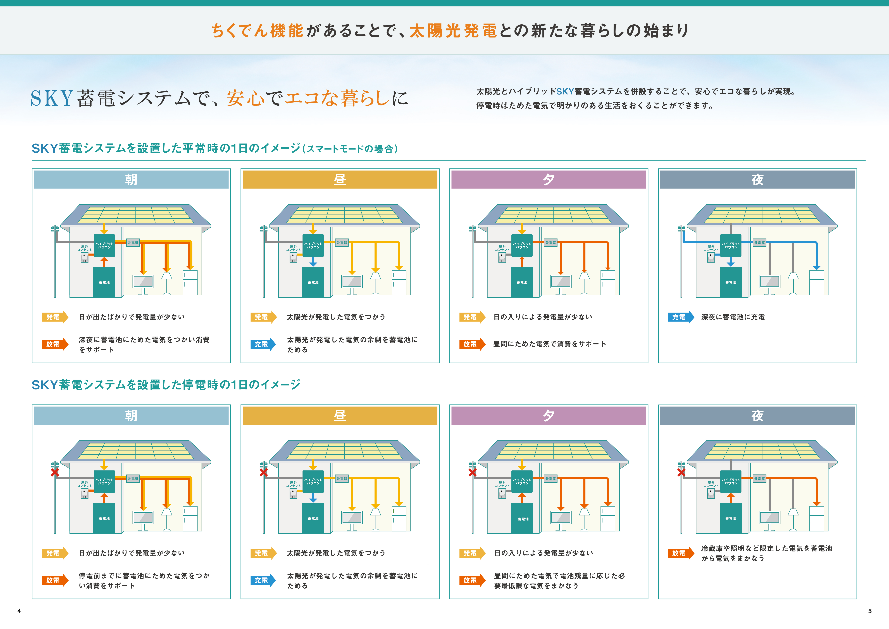
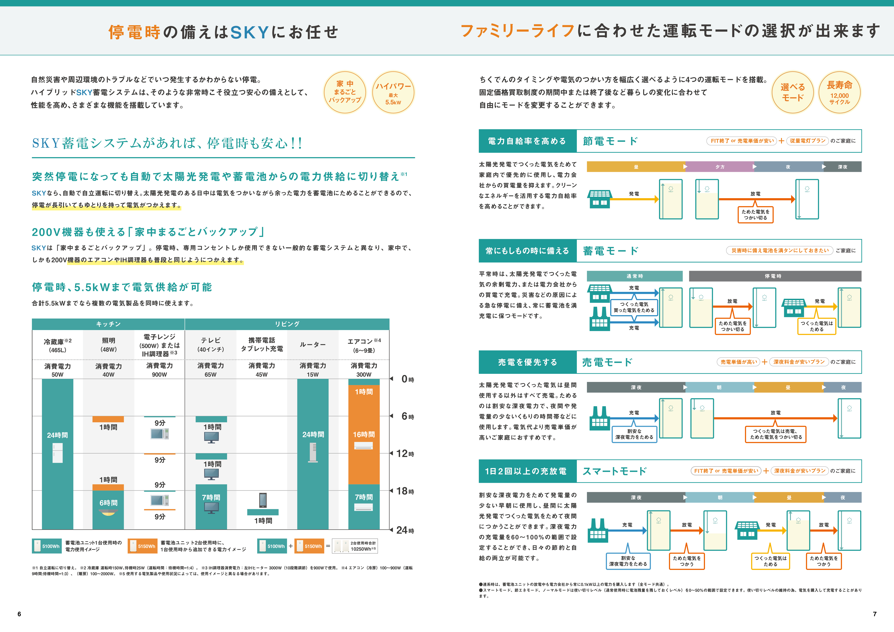
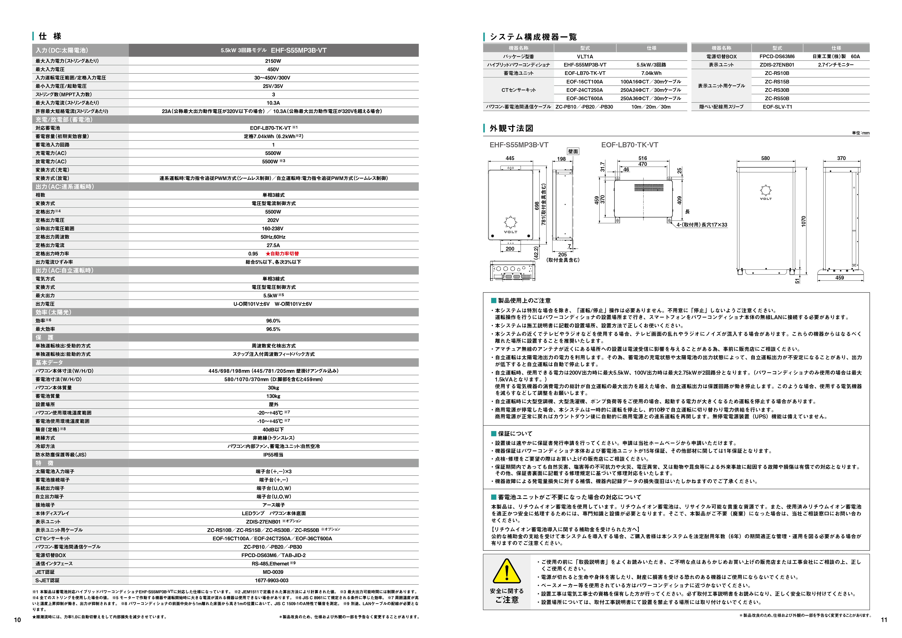
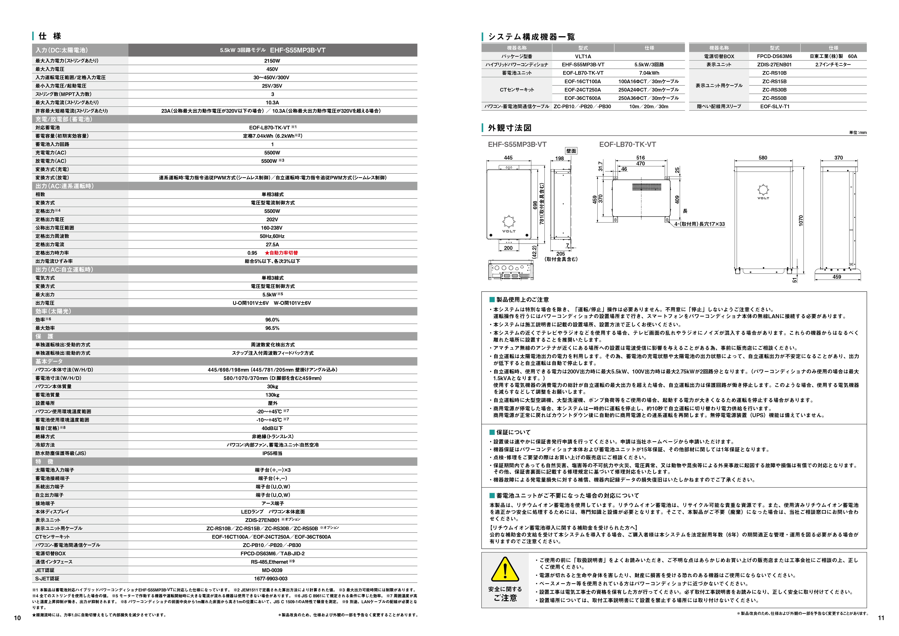

VOLTパンフレット

 



 

目的・課題
- サイト制作の受注の際にパンフレットも作成することになった為対応。
- 営業担当者が営業する際に説明するので、分かりやすいものにする。
制作について
作業時間：他のタスクと並行しながら2ヶ月で納品（2024年4、5月）
デザインについて
- 他社のファミリー向けの親しみやすい印象のパンフレットと綺麗な印象のパンフレットを見せた際に綺麗な印象を好んだので適度に明朝体も使用して綺麗な印象にした。
- 色味は落ち着かせつつ、図は色を変えないと分かりづらいので程度に色を入れた。
使用ツール・言語
Illustrator